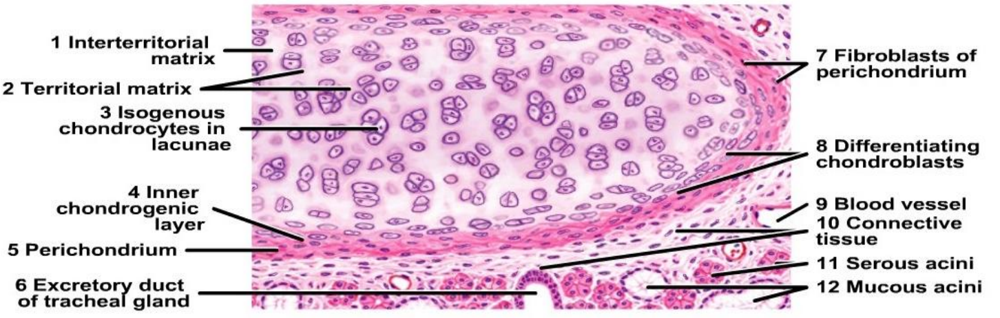
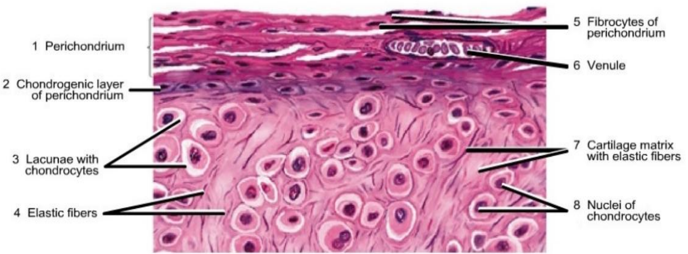
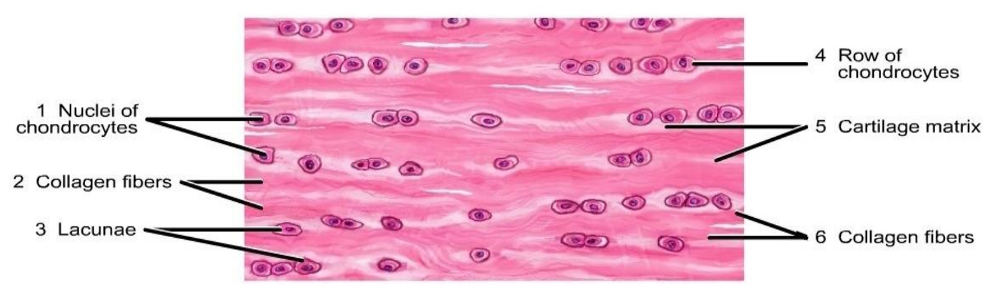

Cartilage
Definition: Cartilage is a firm and flexible scleral connective tissue
General Features
- Support
- Avascular – nourishment by diffusion
- No nerves
- Poor regeneration
- Perichondrium – covering of cartilage
- Except in articular cartilage and fibrocartilage
Growth of cartilage
- Appositional growth: From Perichondrium. Chondrogenic cells forms chondroblasts
- Interstitial growth: From deep chondrocytes
Hyaline cartilage
- Chondrocytes in lacunae appear either singly or in isogenous groups
- The interterritorial matrix stains less basophilic, whereas the territorial matrix around the lacunae stains more basophilic

Figure: histology of hyaline cartilage
Hyaline cartilage examples
- Articular cartilage
- Epiphyseal cartilage
- Costal cartilage
- Tracheal rings
- Thyroid cartilage
- Cricoid cartilage
Articular hyaline cartilage
- Covers articular surfaces in synovial joints
- Extremely smooth, resistant surface
- Bathed by synovial fluid
- Dissipates stresses
- Gives flexibility
- Shock-absorber
- Resists the large compressive forces
- Articular cartilage does not ossify
- 1 to 7 mm in thickness
- Surface of articular cartilage lacks a perichondrium
- Synovial membrane overlaps
Applied anatomy
Osteochondrosis: disorders of actively growing epiphyses lack of vascularity that may be the result of trauma, infection, or congenital malformation.
- Osteochondrosis of the Navicular (Köhler Disease)
- Osteochondrosis of the Metatarsal Head (Freiberg Infraction)
- Epiphysitis of the Tibial Tuberosity (Osgood-Schlatter Disease)
Achrondroplasia
Point mutation in the fibroblast growth factor receptor 3 (FGFR3)
Activated FGFR3 inhibits chondrocyte proliferation
Normal epiphyseal growth plate expansion is suppressed, and long bone growth is severely stunted affects all bones that form from a cartilaginous framework
Elastic cartilage
- Elastic fibres enter the cartilage matrix from the surrounding connective tissue perichondrium and become distributed as branching and anastomosing fibres of various sizes
- Larger chondrocytes in lacunae are more prevalent in the interior
E.g. Ear pinna, external auditory meatus, auditory tube, epiglottis, corniculate and cuneiform

Figure: histology of elastic cartilage
Fibrocartilage
- The matrix is filled with dense collagen fibers with parallel arrangement
- Small chondrocytes in lacunae are distributed in rows within the fibrous cartilage matrix
- Perichondrium is absent
E.g. Intervertebral disc, glenoid and acetabular labrum

Figure: histology of fibrocartilage
e